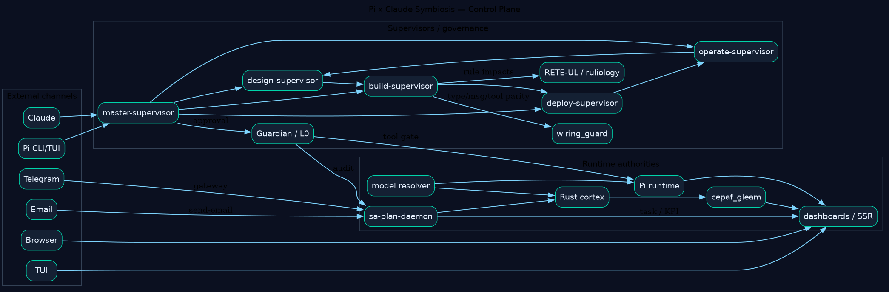
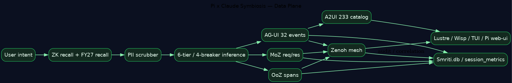
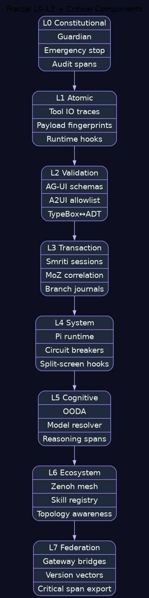
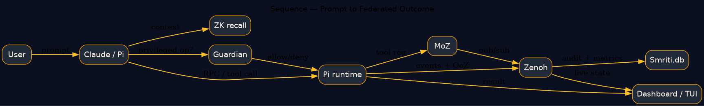
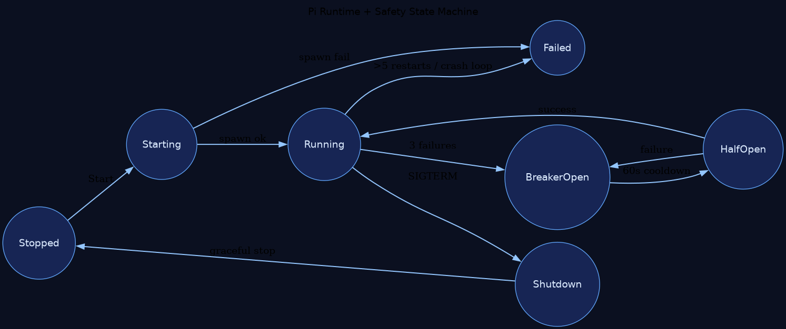

Pi x Claude Symbiosis Critical-Path Ultrapass — Analysis
ZK recall: [zk-cf66a34542d4d380], [zk-8265abb8c204f8b7], [zk-d06e7dea8dc777d4], [zk-ee19f1dd60925d77], [zk-d88a58e54ef8a08f]. Anti-pattern check: [zk-3346fc607a1ef9e6] forbids claiming closure while production stubs still exist.
Task 116491952260654934 · Slug 20260430-054628-task-116491952260654934-pi-symbiosis-critical-path-ultrapass
KPI Summary
PASS
Pi monorepo build
PASS
Gleam build
200
HTTP root / pi-symbiosis / kpi
45%
embedding coverage
$0.5353
pi cost / citation
1
unrelated regression blocking clean Pi slice
Critical-Path Decision
| Decision | Status | Reason |
|---|---|---|
| Plan readiness | READY | Critical path explicit, evidence live, deliverables produced |
| Full parity closure | NOT YET | stub/fallback ambiguity + unrelated test regression remain |
| Operational confidence | HIGH | live dashboards, builds, runtime evidence, artifact bundle |
Fractal Criticality Matrix
| Layer | Primary components | Criticality | Optimization focus |
|---|---|---|---|
| L0 | Guardian / audit | Extreme | non-bypass constitutional logging |
| L1 | tool traces / fingerprints | High | payload trace fidelity |
| L2 | AG-UI / A2UI validation | High | remove bypass paths |
| L3 | Smriti / MoZ correlation | Extreme | single production store |
| L4 | Pi runtime / breakers | Extreme | restart windows / health metrics |
| L5 | OODA / resolver | High | cost and cache optimization |
| L6 | Zenoh / registry | High | transport certainty |
| L7 | federation gateways | Medium | closure notifications |
Diagrams

Control plane

Data plane

Fractal matrix

Message sequence

Runtime state machine
UX/CX loop
Operator Findings
- Pi build green only after Bash-shell override for npm script execution.
- Live dashboard surfaces are healthy on HTTP/HTTPS.
- The current blocker is not Pi compilation but an unrelated
gemini_symbiosis_test.rules_parity_testregression surfacing during Pi integration slice runs. - The highest architectural risk remains fallback/stub semantics in the Pi TS bridge.